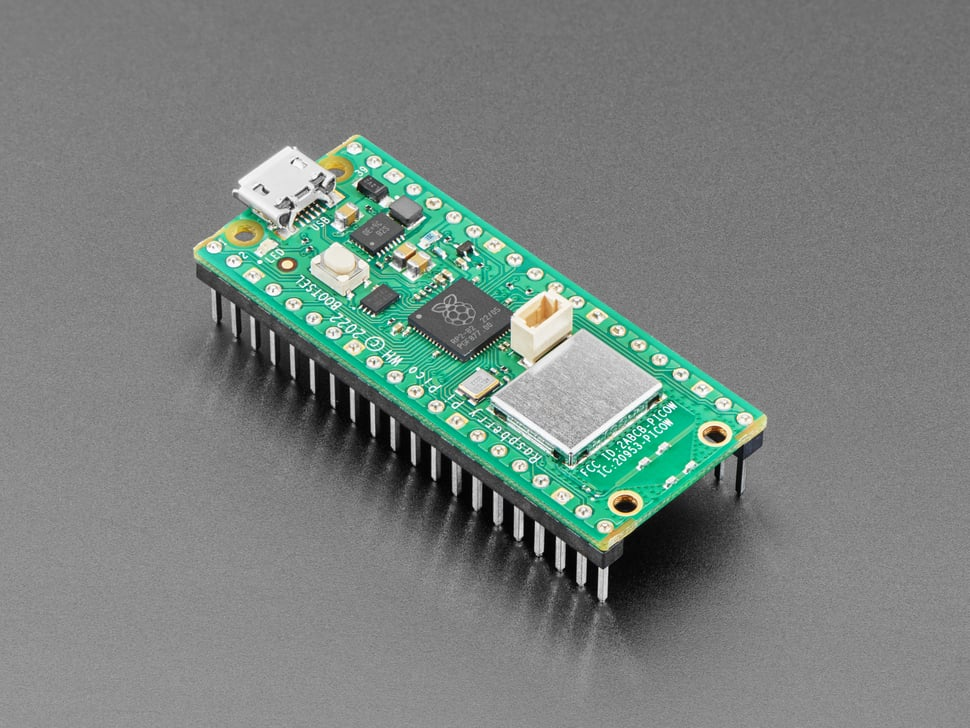
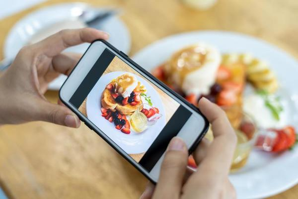

Pico Ducky- USB Rubber Ducky with Raspberry Pi Pico
Created a keystroke injection tool with Raspberry Pi Pico and CircuitPython,
customized an existing GitHub codebase with DuckyScript for personalized payloads.
Built a functional USB Rubber Ducky for security testing applications


Food Tracking Program
Program helps users manage dietary habits. Utilized Python to integrate with the USDA FoodData Central API to provide nutritional insights based on daily food intake.
BookAIO
Automated book downloaded developed using Python, Selenium, EasyGUI, and ConvertAPI. Applied Selenium to automate search and retrieval, allowing users to locate and download resources.
Future Projects
In the near future I plan on adding to my resume of personal projects to further display my engineering knowledge and abilities.
One thing I look forward to doing is a full stack Fantasy Football project. I believe building both the front and back end of an
application will be extremely beneficial to my development skills. I also plan to tackle more hardware based projects.